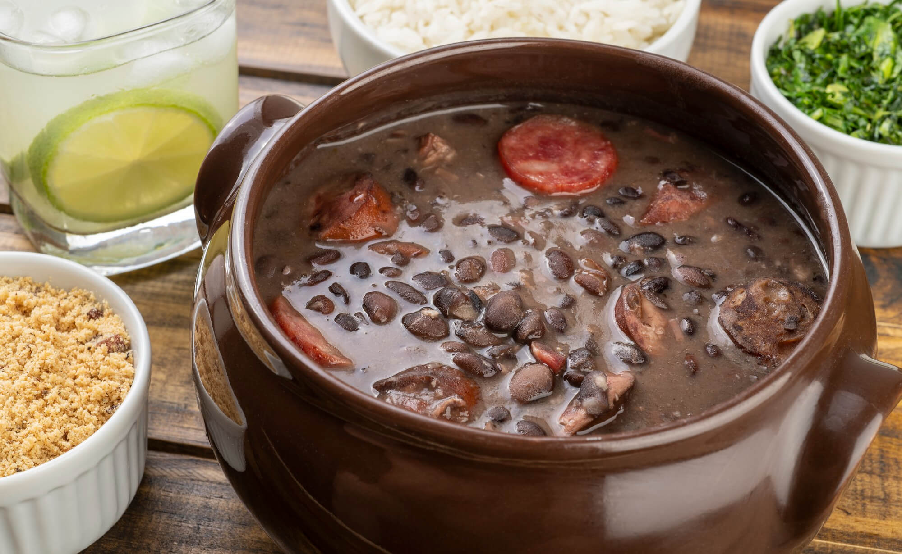

Prato tipico brasileiro - Feijoada

A feijoada é um prato tradicional da culinária brasileira, conhecido por seu sabor rico e encorpado. Geralmente, é feito com feijão preto, várias carnes como carne de porco, linguiça e carne bovina, e é servido com arroz, farofa e couve.
Ingredientes
- 1 kg de feijão preto
- 100 g de carne seca
- 70 g de orelha de porco
- 70 g de rabo de porco
- 70 g de pé de porco
- 100 g de costelinha de porco
- 50 g de lombo de porco
- 100 g de paio
- 150 g de linguiça portuguesa
- 2 cebolas grandes picadas
- 1 maço de cebolinha verde picadinha
- 3 folhas de louro
- 6 dentes de alho
- Pimenta-do-reino a gosto
- 1 ou 2 laranjas
- 40 ml de cachaça ou pinga
- Sal a gosto
Modo de Preparo
- Dessalgar as carnes: deixe as carnes de molho por 24 a 36 horas, trocando a água várias vezes. Para dias quentes, use gelo para manter a temperatura baixa.
- Pré-cozimento das carnes: cozinhe primeiro as carnes mais duras (pé, orelha, rabo, carne seca) e depois as mais macias (linguiças, lombo, costelinha) até ficarem macias.
- Cozinhar o feijão: adicione o feijão ao caldo das carnes e cozinhe até ficar macio. Retire as carnes e reserve.
- Refogar temperos: em uma panela, refogue cebola, alho, louro e cebolinha em um pouco de gordura ou óleo. Acrescente o feijão e misture bem.
- Finalização: junte as carnes ao feijão, adicione a cachaça e ajuste o sal. Cozinhe em fogo baixo até o caldo engrossar e os sabores se incorporarem.